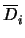
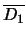
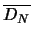
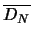
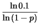

El evento que indica la ocurrencia conjunta de los eventos A y B
se denota por A  B. Dos eventos se dicen independientes si la ocurrencia de uno de ellos
no influye ni se ve influida por la ocurrencia del otro.
B. Dos eventos se dicen independientes si la ocurrencia de uno de ellos
no influye ni se ve influida por la ocurrencia del otro.
Por inducción se puede demostrar que si A1, A2,..., An son eventos independientes con probabilidades P[A1], P[A2], ..., P[An] respectivamente, entonces la probabilidad de la ocurrencia del evento compuesto A1 y A2 y ... y An, es decir todos los eventos, cumple:
| P[A1 |
(1.6) |
Ejemplo 3
Suponga que una máquina fabrica un tipo específico de componente, y que la probabilidad de que un componente salga defectuoso es constante p e independiente de los resultados en los componentes tanto anteriores como posteriores.
- Estime la probabilidad de que el primer componente defectuoso salga inmediatamente después de los primeros N componentes.
- ¿Cuántos componentes deben producirse para tener una probabilidad del 90% de obtener al menos un componente defectuoso?
Solución
- Sea Di el componente i defectuoso y

el complemento de Di. La probabilidad pedida es:
P[(

 ...
)
DN + 1] = (1 - p)Np.
...
)
DN + 1] = (1 - p)Np.
- La probabilidad de ningún componente defectuoso en los primeros k
componentes es (1 - p)k entonces la probabilidad de al
menos un componente defectuoso se 1 - (1 - p)k. El valor k
buscado debe cumplir con
1 - (1 - p)k > 0.9 (1 - p)k < 0.1 k > .
Por ejemplo si la probabilidad de que un componente sea defectuoso es de 0.02 deberían producirse alrededor de 114 componentes para tener una probabilidad del 90% de que haya al menos uno defectuoso.